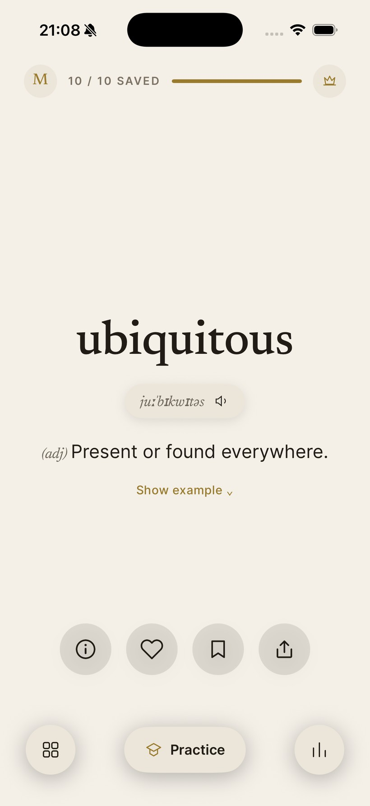
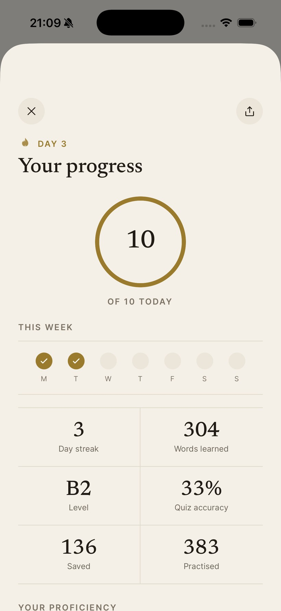
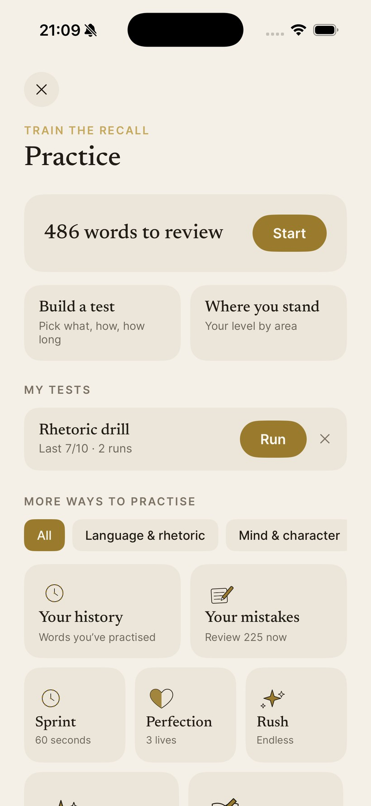

Master the words that make you sound exceptional.
A quiet, editorial vocabulary app for people who already speak well, and want range. One C1–C2 word a day, in about a minute, across the field you actually work in.
Rotates automatically through Lexfall's C1–C2 word bank.
Exactly what's in the app.
Your word for the day, your real proficiency, and the practice that keeps it: three real screens, not a mockup.



A new word on your Home Screen.
The widget surfaces a fresh word every few hours, with its meaning, so you keep learning without opening the app. Here it is, live:
Here's what makes Lexfall different.
Advanced, never basic
The rare, exact words C1–C2 speakers reach for, not the beginner list.
Built around your world
Medicine, law, business, exams: vocabulary chosen by area, not a vague level.
Made to stick
Spaced review brings each word back until it's yours for good.
We built Lexfall because we wanted it and couldn't find it.
What should we focus on?
Pick your main focus. This is the same question the app opens with, and it's real words either way.
Start sounding exceptional today.
Download Lexfall on iPhone and iPad. Your first word, a level test, and the widget are waiting. Begin in about a minute.
Requires iOS 16 or later. Subscription renews automatically; cancel anytime in App Store settings.